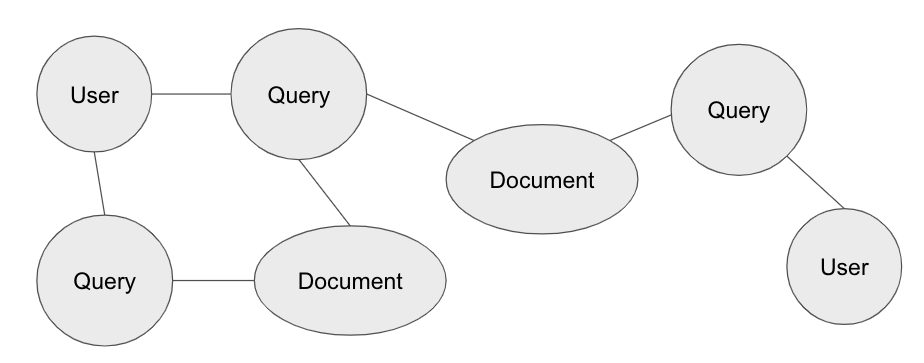
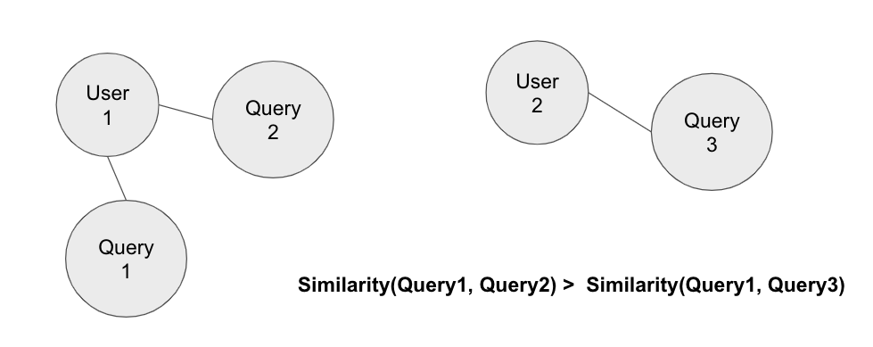
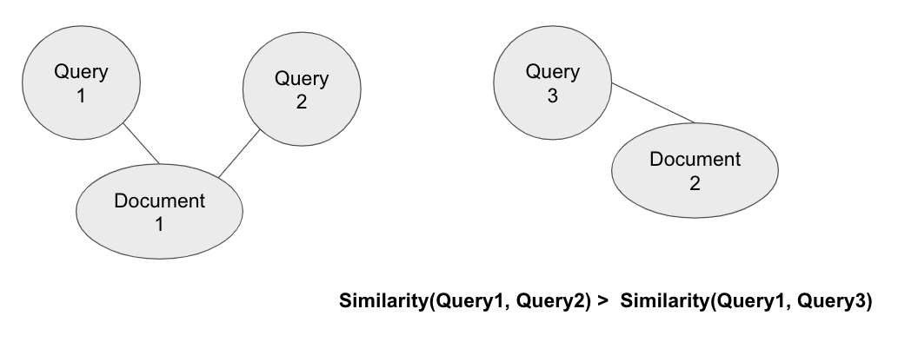

People often need to search for information that results in multiple queries that span over multiple aspects. Identifying such information need, or task, can help recommender systems to provide better query suggestions and personalized recommendations to users. Existing approaches primarily considered the semantic and temporal relations among queries when learning the task representation. We proposed a heterogenous graph model, which encodes both user-query and query-link relations as additional task information in the embedding. We then used a graph convolutional neural network to capture each node’s local neighborhood structure. We tested our approach on the AOL dataset on the task of query suggestion. While our proposed method did not outperform BERT (Bidirectional Encoder Representations from Transformers), the state-of-the-art language model, the experiment provided insights for the next step of learning a better task representation.
People often need to search for information to achieve a goal, or task, such as planning a wedding, or renting an apartment. Completing such search processes requires issuing multiple queries that span over multiple aspects of the task. Thus, learning query embeddings that capture task information can help recommender systems identify the task user is trying to achieve, thereby providing better query suggestions and document recommendations. For example, supposed Jane wants to plan a trip to Japan. Jane would need to search for information regarding flights, hotels, tourist destinations, and so on, which can take many search sessions, and Jane may forget to search for something given the complexity of the task. If the search engine can identify Jane's task (planning a trip to Japan) based on Jane's search queries (flight to Japan, places to visit in Japan, etc.), the search engine can then recommend queries that are searched by other users who planned a trip to Japan.
Existing efforts have attempted a variety of ways at modeling task representation. Jones et al. found out that multiple search tasks may exist in a single session, or time window of specified length. Following this work, Awadallah et al. proposed to cluster queries based on both topical and temporal information. There are also works that considered task as a hierarchy which consists of subtasks, and used tree-based methods to extra task hierarchies. Further, Mehrotra et al. learned query embeddings with contextual information from other queries in the same task. However, existing approaches primarily considered the semantic and temporal features of individual queries.
We argue that the relational information among queries, users and documents is also important to learning task representation. Specifically, we focused on user-query and query-document relations. User-query relation refers to the connection between queries and the user who formulated these queries, which will help capture the structure of queries clustered around the same user. Intuitively, queries issued by the same user are more likely to belong in the same task. On the other hand, query-document relation refers to the connection between a query and the documents clicked by the user after issuing the query. The intuition is that queries that lead to the same document click are likely to be related.
To capture both user-query and query-document relations, we proposed a heterogeneous graph that connects user to queries if the queries are formulated by the user, connects query to documents if documents are clicked following the query. To learn the embedding from the heterogeneous graph, we used the recently introduced graph convolutional neural network, which effectively encodes the structure of each node’s local graph neighborhood. Specifically, we used Metapath2Vec, which introduced a method of learning representation from a heterogeneous graph that consists of different types of nodes and edges.
We evaluated our approach on the AOL dataset. The AOL dataset provides data as a tuple of query, document url, timestamp, document rank, and anonymized user id. The task we used to evaluate our approach is query suggestion. That is, given a query, and a list of candidate queries, we need to generate a relevance score for each candidate query and provide a ranking. We tested our learned embedding against BERT, the state-of-the-art language representation model. Although our approach did not outperform BERT, the unsuccessful attempt confirmed our intuition that relational information is important for learning task representation, and provided insightful guidelines on the future work.
A search task is formally defined as by Jones et al. as an atomic information need resulting in one or more queries. There are many works on learning task representations from a collection of queries, or more concretely, distributing the queries into semantically coherent clusters, where each cluster represents a search task.
Early works attempted this problem orienting around the concept of session. A session is a time window specified by the user, typically 30 minutes. Researchers introduced models based on the intuition that queries issued in the same session are more likely to fall in the same task. Combining with topic-based or semantic-based clustering, these approaches achieve good results when multiple tasks are not done in a single session. It is shown that users often conduct multiple search tasks within a single session. To overcome this challenge, recent works introduced methods that incorporate global task context.
There are also works that attempted to extend the concept of task. Ahmed et al. defined a complex search task as a multi-aspect or a multi-step information need consisting of a set of related subtasks, each of which might recursively be complex. Following this work, Mehrotra et al. introduced a baysian nonparametric approach to extract hierarchies of search tasks. On the other hand, Liu et al. found out that complex search tasks can be decomposed into different states, and proposed a reinforcement learning model to predict the transition of states.
Our proposed graph is comprised of either user, query, or document as node, and the nodes are connected through user-query and query-document links. We then applied Metapath2Vec to learn the node embeddings. Below we will explain our intutions behind constructing the graph.
We chose the nodes of our graph to be user, query, and document because these information are generally available from query log datasets. We are aware that language shifts and evolves over time. So we cannot simply train an embedding based on the existing query logs, and expect it to work for a long time. Hence, we decided to keep our selection of nodes simple so that it is easily re-trainable with additional query logs.
We decided to let one type of edge be user-query link based on the assumption that queries formulated by the same user are more likely to belong in the same task, comparing to queries formulated by different users. For example, if a user wants to look for information to prepare for a trip, the user may search up many queries regarding the trip. On the other hand, if we randomly sample two users, the queries from the two users are likely for two different tasks, given the vast dimension of the task space. By linking query and user this way, the information from queries issued by the same user can then propagate to each other through the user node, thus yielding a closer geometric relation.
Moreover, we decided to let the other type of edge be query-document link based on the assumption that queries that led to the same document are more likely to be related to the same task, as opposed to queries that led to different documents. For example, if a document on tourist destinations in Tokyo is clicked by a user following by two different queries, the two queries are probably both about tourist destinations in Tokyo. Linking query and document together would thus induce a stronger tie between the queries that are linked by the same document.
Unfortunately, our approach did not outperform BERT. BERT achieved an nDCG score of .62, while our approach achieved .61. While the result is not promising, it seems to indicate several possible findings: 1) The relational information among user, query, and document does not help better represent the task 2) Relational information may be helpful, but the two types of relations may not be enough. 2.1) Specifically, the first assumption made regarding user-query relation may be too loose. While it's true that queries formulated by the same user are likely to belong to the same task, it's also true that user often searches information for multiple tasks. So when linking queries that belong to different tasks together through the same user, the embedding may capture inaccurate information. 2.2) The second assumption made regarding query-document relation may have very little impact due to graph sparsity. That is, only very few queries actually share the same document. Therefore, even if the assumption regarding queries leading to the same document are related is true, only a tiny portion of the queries benefited from this.
Our approach has many limitations. While a graph neural network is very powerful, it’s important to note that training such a model requires an enormous amount of data. Since our proposed model is heterogeneous, each user is only linked with a very small subset of the queries, and each query is also linked with a very small subset of the documents, leading to a very sparse graph. Hence we need a vast amount of data to capture meaningful relationships. Such dataset may be very difficult to obtain. Additionally, the two assumptions that we induced in the model may either be too loose or weak, as we discussed in the results section.
As graph neural networks are getting more widely recognized, this is a merely first attempt to leverage a graph neural model to learn query embeddings that capture task information. There are many other possibilities that we did not explore due to the limitation of time. One idea we can try is to include query-query and query-document link based on search session, in addition to the links proposed in this paper. This would add a constraint to the previously made assumption regarding user and query, so that queries are relevant to each other not only because they are issued by the same user, but also because they are searched in the same session. Another idea is to increase the impact of our second assumption by increasing the number of query-document links. We can do this by taking a query-document link, then sample queries that are semantically similar to the query of the select link, link these queries to the document. This idea is feasible because queries that are semantically similar should lead to the same set of documents.
The implementation of this work can be found in this Colab notebook: https://colab.research.google.com/drive/1O2ZAlmL7gOH7J7jwLRknJYvkgx3hRWL4?usp=sharing